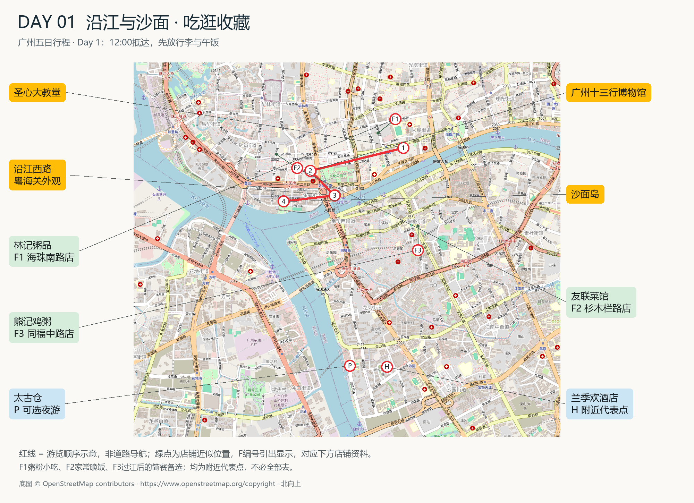
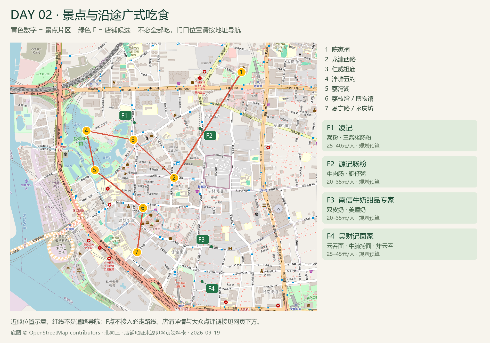
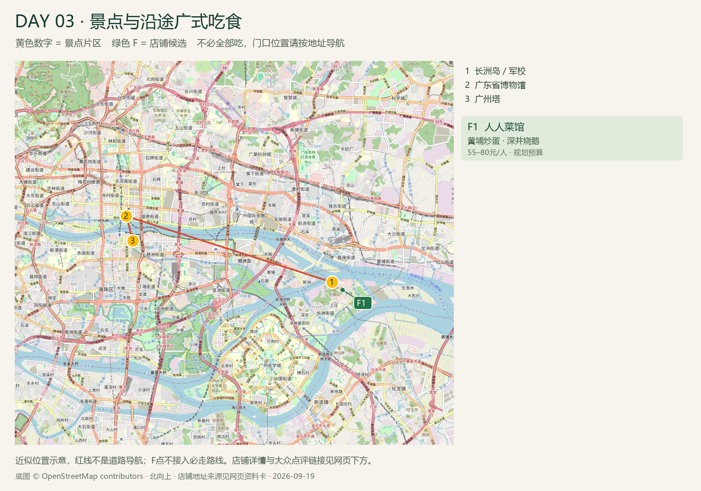
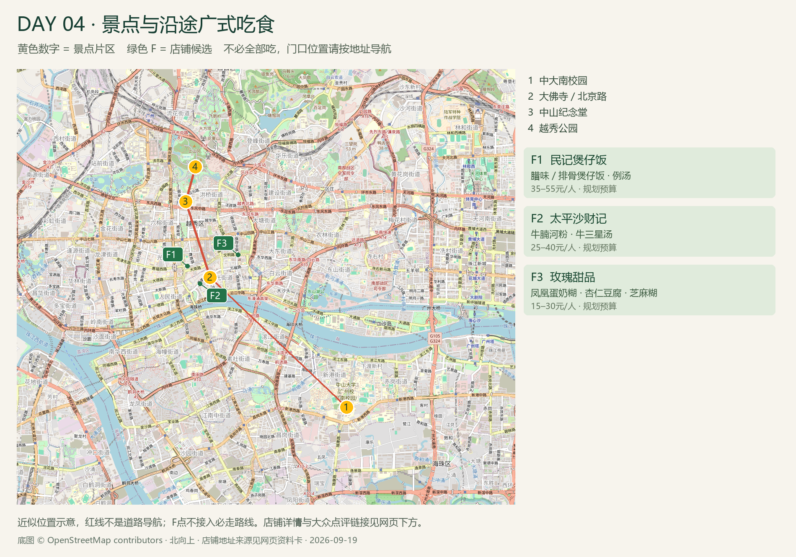

05五日行程 · 城市文化与自然探索
12:00首日预计抵达
海珠 · 沙园全程住宿区域
探索每日行程
选择日期，查看专属导览
每一天均可独立浏览，无需展开完整行程。

ROUTE 01DAY 01 · 10月1日
沿江与沙面
从石室教堂到沙面街区，沿珠江探访广州的商贸历史与近代建筑。
查看当日详情 ↗
ROUTE 02DAY 02 · 10月2日
西关街巷
探访岭南建筑、传统街巷与水乡园林，感受西关的人文风貌。
查看当日详情 ↗
ROUTE 03DAY 03 · 10月3日
长洲岛与珠江
走访黄埔军校旧址与广东省博物馆，傍晚欣赏广州塔及珠江夜景。
查看当日详情 ↗
ROUTE 04DAY 04 · 10月4日
校园与古城
以校园、寺院与城市纪念建筑为线索，了解广州的文化传承。
查看当日详情 ↗长隆野生动物世界
SAFARI PARK
SAFARI PARK
DAY 05 · 10月5日
长隆野生动物世界
前往长隆野生动物世界，结合个人兴趣与体力自主安排动物观赏及园区游览。
查看当日详情 ↗住宿与交通
兰季欢酒店
广州太古仓沙园地铁站店 · 工业大道北83-16号
每日以酒店为出发与返回点，跨片区建议乘车。首日暂按广州南站12:00抵达规划；10月6日按实际车次安排返程。
查看预约、抵达与返程提示 →